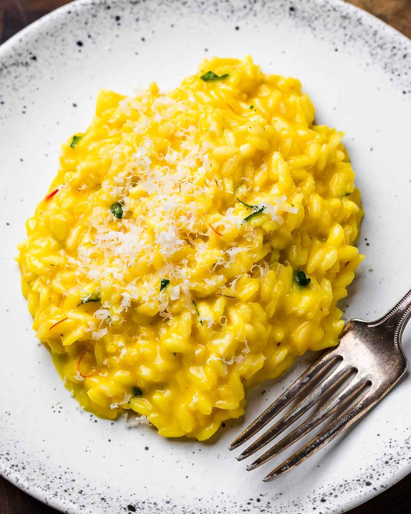

Risotto milanese

description
Risotto alla Milanese is a creamy dish made with Arborio rice that’s gently cooked in beef stock and wine and finished with Parmigiano Reggiano, butter, parsley, and saffron.
This risotto makes the perfect side to a wide variety of meat, but goes especially well with braised dishes like Osso Buco.
ingredients
- 2 cups (400g) Arborio rice or Carnaroli or Vialone Nano
- 8 cups (1.9kg) low-sodium beef stock can also sub chicken or vegetable stock
- 3/4 cup (180g) dry white wine
- 1/2 cup (113g) unsalted butter divided
- 1 large shallot finely diced
- 1 cup (90g) grated Parmigiano Reggiano plus more for serving
- 3 tablespoons minced flat-leaf Italian parsley
- salt and pepper to taste
For the saffron mixture
- 1/2 teaspoon saffron threads
- 1/2 cup (120g) warm low-sodium beef stock
steps
- In a large saucepan, heat the beef stock and bring to a low simmer.
- Heat a large, preferably nonstick, pan to medium heat with 3 tablespoons of butter. Add the shallot and saute until soft (about 3-4 minutes).
- Add the rice and stir frequently while continuing to cook for another 2-3 minutes or until the rice turns a bit translucent at the edges.
- Add the wine to the pan and turn the heat to high. Reduce the wine by half (about 2-3 minutes) then turn the heat down to a low simmer.
- Add a 1/2 cup of the stock at a time and stir frequently. As the liquid evaporates, add another 1/2 cup of stock.
- Repeat the process, cooking at a low to medium simmer,
until the risotto is al dente and creamy, but not overcooked (should take about 20 minutes). You might not need to use all of the stock.
- Approximately 5 minutes before the risotto has finished, mix a 1/2 cup of warm beef stock with the saffron.
- When satisfied with the consistency, remove the risotto from the heat and add the saffron mixture. Mix well then add the butter,
grated cheese, and parsley. Taste test, and season well with salt and pepper to taste. Serve immediately.